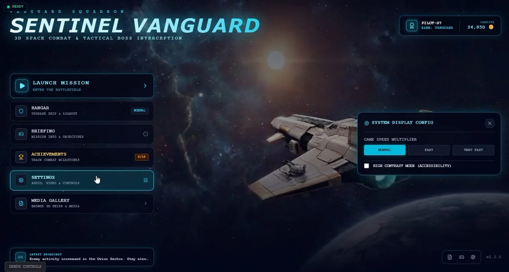
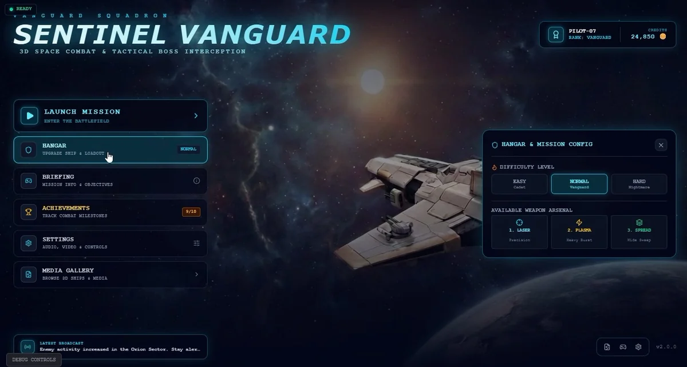
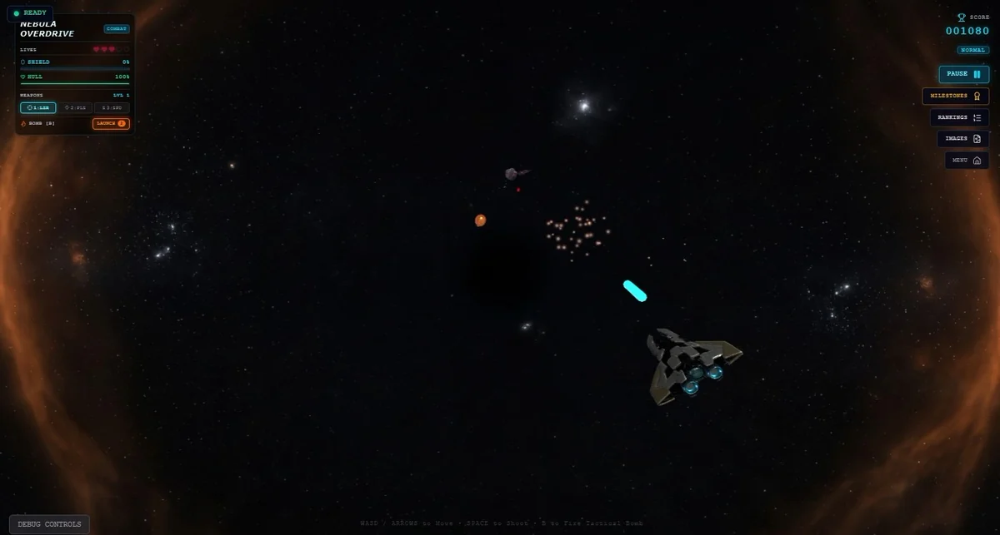
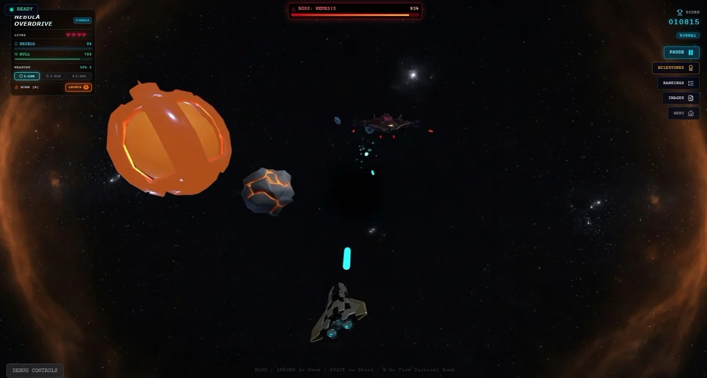

Apps & Games
Sentinel Vanguard
3D space combat with a tactical layer on top. You launch from a hangar, pick a loadout, and fly against waves of fighters and rock — until a boss arrives with its name and a health bar across the top of the screen.
Overview
Sentinel Vanguard is built as a real-time 3D game rather than a 2D shooter. The ship, the enemies and the boss are GLB models lit inside a starfield, and the camera sits behind the hull so every manoeuvre has weight to it.
Around the combat sits a shell that most shooters skip: a hangar where the ship and loadout are configured, a briefing with objectives, achievements that tick up as milestones land, a pilot rank and a credit balance, and a settings panel with a game-speed multiplier and a high-contrast mode. The HUD during play keeps ship status, shields and hull, the weapon and its ammo, bombs and the overdrive state in one column — everything you need to read in a half-second glance.
Gameplay capture
A full minute of the build — the hangar, the weapon configuration, then the launch: asteroids, fighters, pickups and the boss interception.
What's in the build
- Hangar and loadout — the ship, its weapons and the difficulty are chosen before launch, not during it. Easy, Normal or Hard, decided in the config panel.
- Three weapons with different jobs — Laser for precision, Plasma for heavy burst, Spread for a wide sweep. Each carries its own ammo count in the HUD.
- Shields and hull, tracked separately — the status column shows both, so a hit reads as a number rather than a flash.
- Bombs and overdrive — a limited bomb stock, and a combat overdrive state that changes how the HUD reads while it lasts.
- Bosses with a health bar — the interception is the point: a named boss, its own bar across the top of the screen, and a percentage that only goes one way.
- A pilot and an economy — rank, credits and traders sit around the combat, with milestones and rankings tracked from the same menu.
- Achievements — combat milestones are counted (9 of 18 in the capture) and surfaced on the title screen rather than buried.
- Accessibility settings — a high-contrast mode and a game-speed multiplier, both in the settings panel.
Gallery




Under the hood
At a glance
| Type | 3D space combat with tactical boss interception |
|---|---|
| Platform | Browser — desktop-first build |
| Assets | GLB models for ship, enemies, boss and pickups |
| Loadout | Laser, plasma, spread — plus bombs and overdrive |
| Meta | Pilot rank, credits, traders, achievements, rankings |
| Settings | Difficulty, game-speed multiplier, high-contrast mode |
| Status | Playable build — in development |